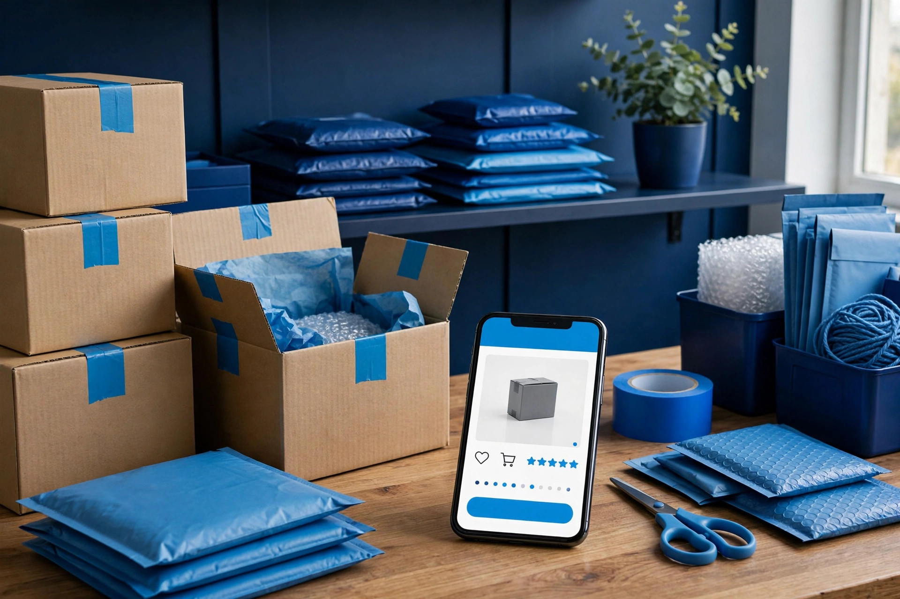

E-commerce SEO connects your products and categories with the searches your potential customers use. I optimize store structure, product pages, category pages and technical signals to build qualified organic visibility.
E-commerce SEO needs more than keyword placement. Your products, categories, navigation, technical setup and content all need to work together.
Optimize product titles, descriptions, headings, internal links and on-page relevance around real product searches.
Build stronger category pages with useful copy, clear hierarchy and keyword targeting that supports commercial search intent.
Find product, category, comparison and long-tail searches that match what potential buyers are looking for.
Improve navigation, URL structure and internal linking so users and search engines can discover important products efficiently.
Review crawlability, indexation, duplicate URLs, canonical signals, redirects and other technical issues that can affect store visibility.
Use buying guides, comparisons, FAQs and supporting content to answer customer questions and strengthen commercial pages.
The focus is qualified organic traffic—not traffic that looks good in analytics but never reaches a product or purchase decision.
Review your store structure, indexation, product and category pages, technical setup and existing organic visibility.
Identify commercial keywords, product searches, category opportunities and competitor gaps.
Improve important pages, internal links, metadata, content and technical signals based on priority.
Expand content and authority around profitable categories while monitoring rankings and organic conversions.

Every product and category page has its own search job, so each part of your store is checked and improved.
Clear, unique titles that name the product and its key feature in the words buyers search. Descriptions explain benefits, materials, sizes and uses, instead of a short supplier line repeated on many other stores.
Categories receive a proper introduction, buying guidance and clear headings. This gives Google real content to understand and helps shoppers choose, instead of facing only a grid of pictures and prices.
Searches are mapped to the right product or category, including brand and model searches, size, colour and material searches, and questions from shoppers comparing options before they buy.
Important product images get accurate alt text describing the item, colour and key detail. This helps images appear in image search and supports screen reader users.
Categories link to their best products, and product pages link back to their parent category and to related items. This helps search engines find deeper products.
Sold out and discontinued products follow a clear plan. Returning items keep their page with a stock notice, finished lines point to the nearest alternative, and near-identical variant pages are consolidated.
Product structured data is checked so search engines can clearly read each item's name, image, description and availability. Correct markup keeps the information in search consistent with the information shown on the page.
Image sizes, heavy scripts and cluttered product layouts are reviewed, and the buying path is checked on a phone.
The work follows an order, so foundations are fixed before product pages are polished.
The store is crawled and every product, category, duplicate and missing page is listed, noting thin content, broken links, slow templates and pages Google has not indexed.
Researched searches are matched to one clear page each. This prevents two products fighting for the same search and shows which categories need content first.
Titles, descriptions, headings, alt text and category copy are rewritten page by page, starting with the products and categories that matter most to your store.
Internal links, structured data, duplicate handling and speed issues are addressed, then changed pages are rechecked so search engines can crawl and index them.
If you sell online and rely only on social posts or paid adverts, e-commerce SEO gives your store a lasting presence in product searches.
Stores with many products and older pages that have never been properly optimised, needing their catalogue organised around real buyer searches.
Small shops in Layyah, Chobara, Chowk Azam and nearby areas selling online, who want customers beyond their street and social circle to find their products on Google.
Owners launching a new store who want product and category pages built correctly from the start, instead of repairing the same mistakes across hundreds of pages later.
Many stores look fine yet stay hard to find, because the same problems repeat across the catalogue.
When every seller pastes the same supplier text, Google sees near-identical pages everywhere. Original descriptions written for your own customers fix that and actually help shoppers decide.
A category with no introduction or guidance gives search engines almost nothing to rank. Useful copy explaining the range and choices turns it into a selling page.
When dozens of products share one title pattern, searches cannot tell them apart. Distinct titles naming each item clearly help the right page appear for the right search.
Large uncompressed photos and clutter make product pages load slowly on mobile data. Tidier images and layout help shoppers view the product properly and reach checkout without frustration.
The finished work is visible on your store, with a clear summary of every change made.
Rewritten titles and descriptions, stronger category content, corrected alt text and cleaner internal links, live on your store in natural language for your customers.
A record of which searches belong to which product or category page, so new products you add later follow the same structure instead of creating duplicates.
A summary of what changed, which pages were prioritised, how out-of-stock and duplicate pages were handled, and sensible next steps for future products.
SEO can help your products and categories appear when people are actively searching for what you sell, creating an additional source of qualified organic traffic.
It depends on the store. Important categories often deserve strong attention because they organize products and target broader commercial searches, while priority products may need individual optimization.
Yes. The SEO principles apply across platforms, although the exact implementation steps vary depending on the store's CMS, theme and installed functionality.
No honest SEO service can guarantee a specific number of sales. SEO can improve qualified visibility, but conversions also depend on pricing, product quality, trust, UX and the overall offer.
Out-of-stock pages are handled carefully instead of being deleted without thought. If an item will return, the page can stay live with a clear stock message and links to similar products. If it is gone for good, visitors and search engines are guided to the closest matching product or its parent category.
Send me your store URL and main product categories. I'll help identify the biggest SEO opportunities in your e-commerce setup.
Request Free E-commerce SEO Audit